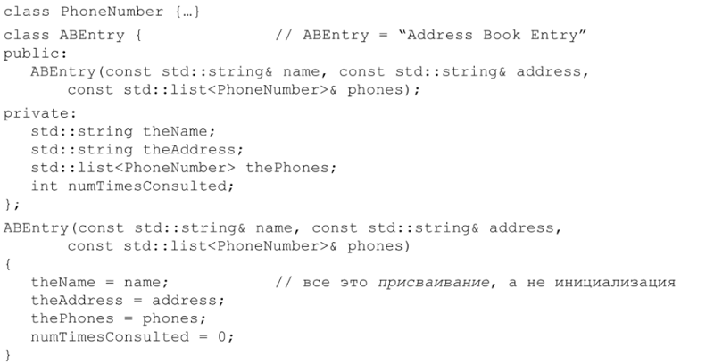
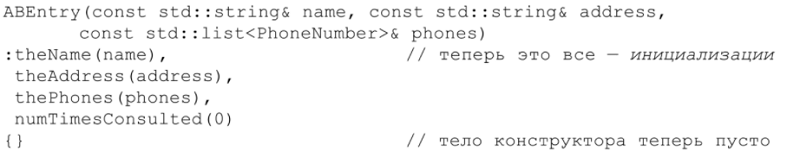

⇐Правило 3: Везде, где только можно используйте const
Отношение C++кинициализации значений объектов может показаться странным. Например, если вы пишете:
int x;
то в некоторых контекстах переменнаях будет гарантированно инициализирована нулем, а в других – нет. Если вы пишете:
то члены-данные объекта р иногда будут инициализированы (нулями), а иногда - нет. Если Вы перешли к C++ от языка, где нейнициализированные объекты не могут существовать, обратите на это внимание.
Чтение нейнициализированных значений может быть причиной неопределенного поведения. На некоторых платформах такое простое действие, как доступ к неинициированному значению для чтения, может вызвать аварийную остановку программы. Но чаще вы получите случайный набор битов, который испортит внутреннее состояние объекта, в который они записываются, и в конечном итоге это приведет к необъяснимому поведению программы и длительному поиску Ошибки В отладчике.
Сформулируем правила, которые описывают, когда инициализация объекта гарантируется, а когда нет. К сожалению, эти правила достаточно сложны – на мой взгляд, слишком сложны, чтобы их стоило запоминать. Вообще, если вы работаете с C-частью C++ (см. правило 1) и инициализация может стоить определенных затрат во время исполнения, то не гарантируется, что она произойдет. Это объясняет, Почему содержимое массивов (в C-части C++) не обязательно инициализируется, а содержимое вектора (из STL-части C++) инициализируется всегда.
По-видимому, лучший способ поведения в такой неопределенной ситуации - всегда инициализировать объекты, прежде чем их использовать. Для объектов встроенных типов, не являющихся членами классов, это нужно делать вручную. Например:
Почти во всех остальных случаях ответственность за инициализацию ложится на конструкторы. Правило простое: убедитесь, что все конструкторы инициализируют в объекте всё.
Этому правилу легко следовать, но важно не путать присваивание с инициализацией. Рассмотрим конструктор класса, представляющего записи в адресной книге:
Да, в результате порождаются объекты ABEntry со значениями, которых вы ожидаете, но это все же не лучший подход. Правила C++ оговаривают, что члены объекта инициируются перед входом в тело конструктора. То есть внутри конструктора ABEntry члены theName, theAddress и thePhones не инициализируются, а им присваиваются значения. Инициализация происходит ранее: когда автоматически вызываются их конструкторы перед входом в тело конструктора АВEntry. Это не касается numTimesConsulted, поскольку этот член относится к встроенному типу. Для него нет никаких гарантий того, что он вообще будет инициализирован перед присваиванием.
Лучший способ написания конструктора ABEntry – использовать список Инициализации членов Вместо присваивания:
Этот конструктор дает тот же самый конечный результат, что и предыдущий, но часто оказывается более эффективным. Версия, основанная на присваиваниях, сначала вызывает конструкторы по умолчанию для инициализации theName, theAddress и thePhоnеѕ, а затем сразу присваивает им новые значения, затирая те, что уже были присвоены в конструкторах по умолчанию. Таким образом, вся работа конструкторов по умолчанию тратится впустую. Подход со списком Инициализации членов позволяет избежать этой проблемы, поскольку аргументы в списке Инициализации используются в качестве аргументов Конструкторов для различных членов-данных. В этом случае theName создается конструктором копирования из name, theAddress - из address, thePhones – из рhоnеѕ. Для большинства типов единственный вызов конструктора копирования более эффективен – иногда намного более эффективен, чем вызов Конструкторов по умолчанию с последующим вызовом операторов присваивания.
Для объектов встроенных типов вроде num TimesConsulted нет разницы по затратам между инициализацией и присваиванием, но для единообразия часто лучше инициировать все посредством списка инициализации членов. Такие списки можно применять даже тогда, когда данные-члены ИНИЦиализируются Конструкторами по умолчанию: просто не передавайте никаких аргументов соответствующему конструктору. Например, если у ABEntry есть конструктор, не принимающий параметров, то он может быть реализован примерно так:
Поскольку компилятор автоматически вызывает конструкторы по умолчанию Для данных-членов пользовательских типов, когда для них отсутствуют ИНИЦиализаторы в списке инициализации членов, некоторые программисты считают приведенный выше код избыточным. Это понятно, но, придерживаясь Политики всегда перечислять все данные-члены в списках Инициализации, вы избавляете себя от необходимости помнить, какие члены будут инициализированы, если их пропустить, а какие - нет. Например, поскольку num TimesConsulted относится к встроенному типу, то исключение его из списка инициализации может открыть двери неопределенному поведению.
Иногда список инициализации просто необходимо использовать, даже для встроенных типов. Например, данные-члены, которые являются константами либо ссылками, обязаны быть инициализированы, так как они не могут получить значения посредством присваивания (см. также правило 5). Чтобы избежать необходимости помнить, когда данные-члены должны быть инициализированы в списке инициализации, а когда это не обязательно, проще делать это всегда. Иногда это обязательно, а часто — более эффективно, чем присваивание.
Во многих классах есть несколько конструкторов, и каждый конструктор имеет свой собственный список Инициализации. Если у класса много данных-членов или базовых классов, то наличие большого числа списков инициализации порождает нежелательное дублирование кода (в списках) и тоску (у программистов). В таких случаях имеет смысл опустить в списках инициализации те данные-члены, для которых присваивание работает так же, как настоящая инициализация, переместив инициализацию в одну (обычно закрытую) функцию, которую вызывают все конструкторы. Этот подход может быть особенно полезен, если начальные значения должны быть загружены из файла или базы данных. Однако, вообще Говоря, инициализация членов посредством списков Инициализации более предпочтительна, чем псевдоинициализация присваиванием.
Один из аспектов C++, на который можно положиться, — это порядок, в котором инициализируются данные объектов. Этот порядок всегда один и тот же: базовые классы инициализируются раньше производных (см. также правило 12), авнутри класса члены-данные инициализируются в том порядке, в котором объявлены. Например, в классе АВEntry член theName всегда будет инициализирован первым, theAddress – вторым, thePhones – третьим, a num TimesConsulted - Последним. Это верно даже в случае, если в списке инициализации членов они перечислены в другом порядке (что, к сожалению, не запрещено). Чтобы не вводить в заблуждение человека, читающего вашу программу, и во избежание ошибок непонятного происхождения, всегда перечисляйте данные-члены в списке инициализации в том порядке, в котором они объявлены в классе.
Позаботившись о явной инициализации объектов встроенных типов, которые не являются членами классов, и обеспечив правильную инициализацию базовых классов И Их данных-членов посредством списков Инициализации, у вас останется только одна вещь, о чем нужно будет подумать. Речь идет о порядке инициаЛизации нелокальных статических объектов, объявленных в разных единицах трансляции.
Отнесемся к этой фразе со всем вниманием.
Статический объект существует от момента, когда был сконструирован, и до конца работы программы. Объекты, размещенные в стеке и в «куче», к статическим не относятся. Статическими являются глобальные объекты, объекты, объявленные в области действия пространства имен, объекты, объявленные с ключевым словом static внутри классов и функций, а также в области действия отдельного файла с исходным текстом. Статические объекты, объявленные внутри функций, известны как локальные статические объекты (поскольку они локальны по отношению к функции), а все прочие называют нелокальными статическими объектами. Статические объекты автоматически уничтожаются при завершении программы, то есть при выходе из функции main() автоматически вызываются их деструкторы.
Единица трансляции (translation unit) – это исходный код, который порождает отдельный объектный файл. Обычно это один исходный файл Плюс все файлы, включенные в него директивой #include.
Проблема возникает, когда есть, по крайней мере, два отдельно компилируемых исходных файла, каждый из которых содержит, по крайней мере, один нелокальный статический объект (то есть глобальный объект либо объявленный В области действия пространства имен, класса или файла). Суть ее в том, что если инициализация нелокального статического объекта происходит в одной единице трансляции, а используется он в другой, то такой объект может оказаться неинициализированным в момент использования, поскольку относительный порядок инициализации нестатических локальных объектов, определенных в разных единицах трансляции, не определен.
Рассмотрим пример. Предположим, у вас есть класс FileSystem, который делает файлы из Internet неотличимыми от локальных. Поскольку ваш класс представляет мир как единую файловую систему, вы могли бы создать в глобальной области действия или в пространстве имен соответствующий ей специальный объект:
Класс FileSystem определенно не тривиален, ПОЭТому использование объекта theFileSystem до того, как он будет сконструирован, приведет к катастрофическим последствиям.
Теперь предположим, что некий пользователь создает класс, описывающий каталоги файловой системы. Естественно, его класс будет использовать объект theFileSystem:
Правило 4: Прежде чем использовать объекты, убедитесь, что они инициализированы⇒